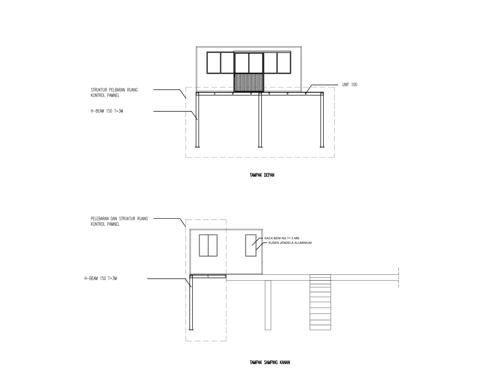
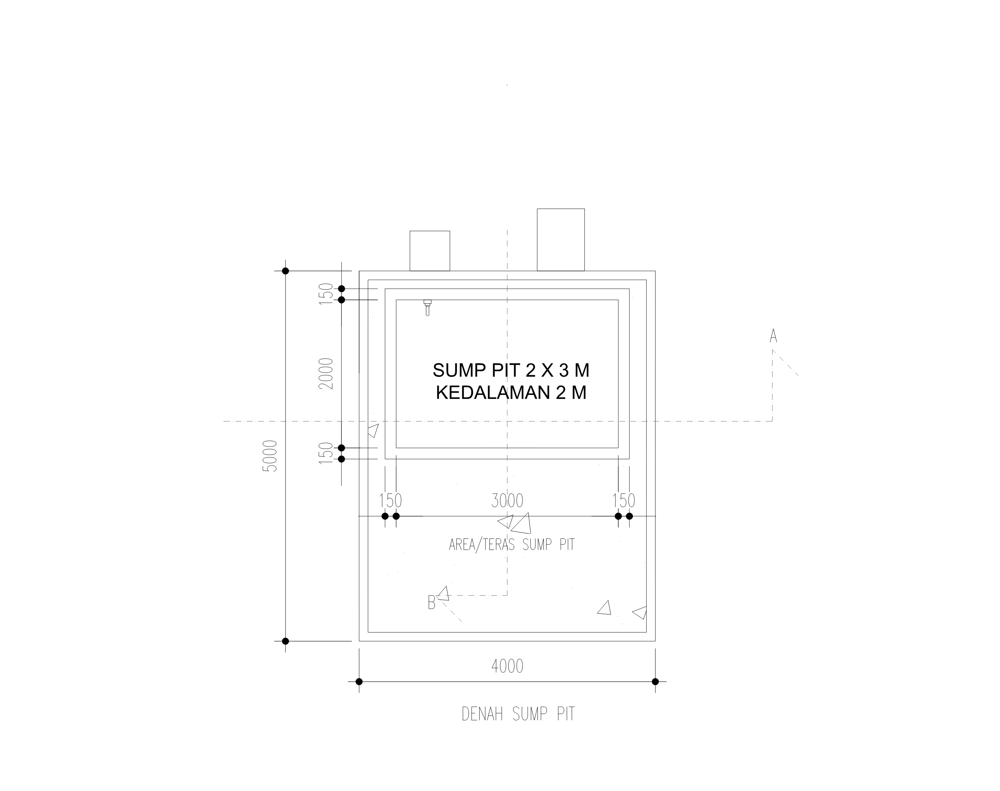
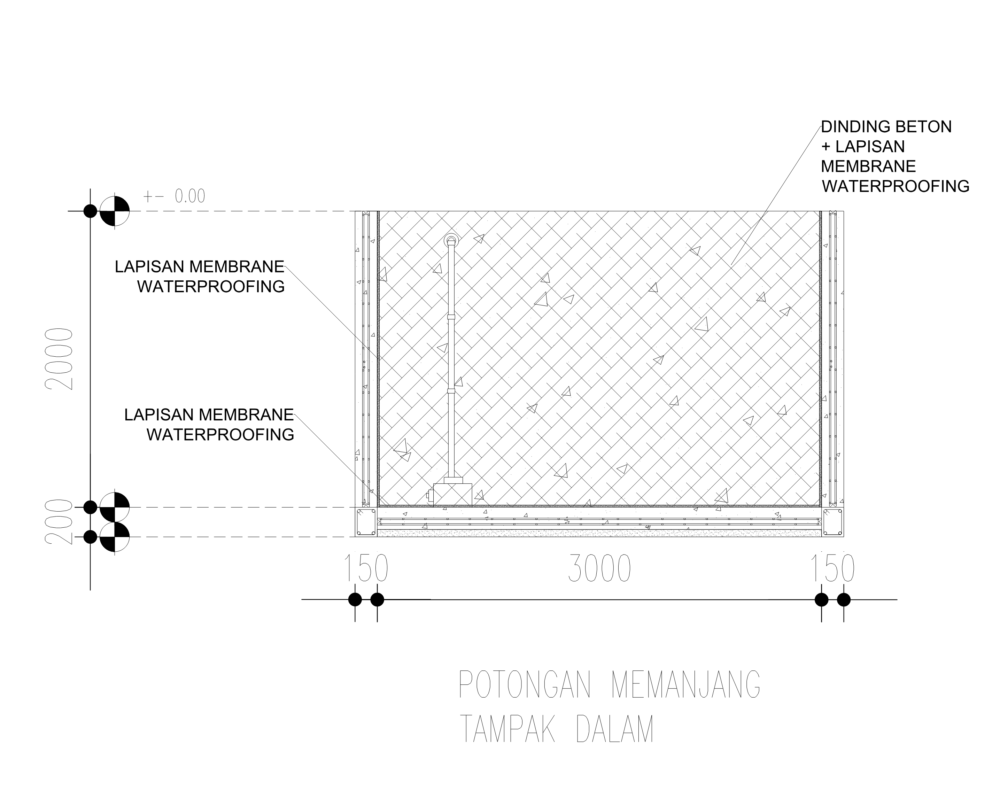
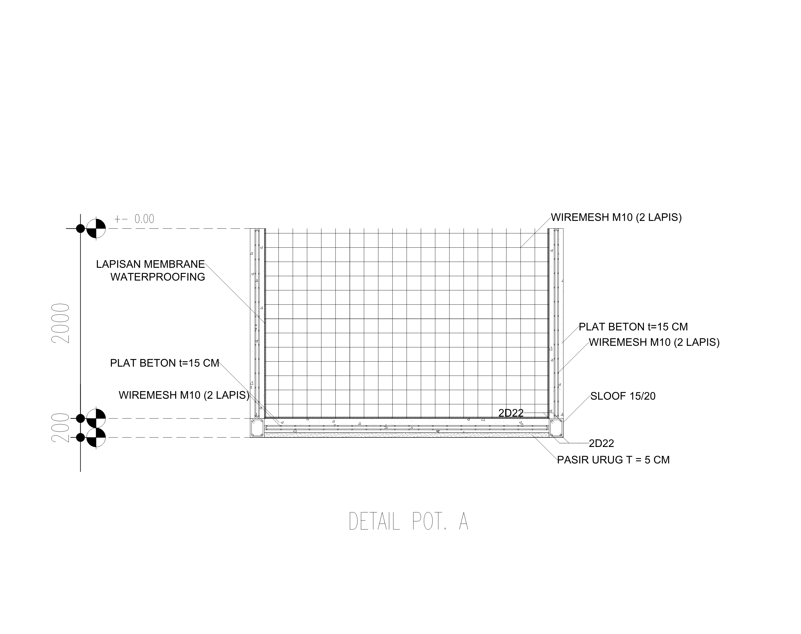
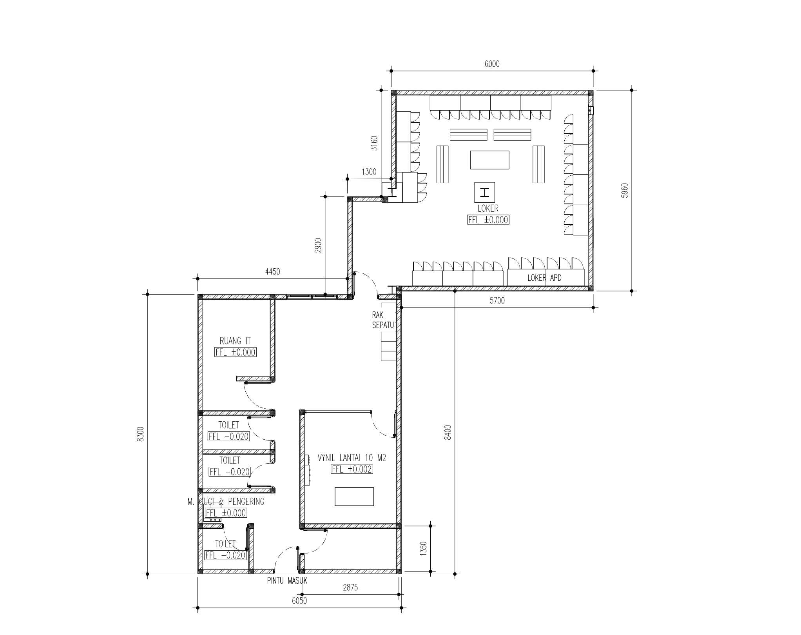
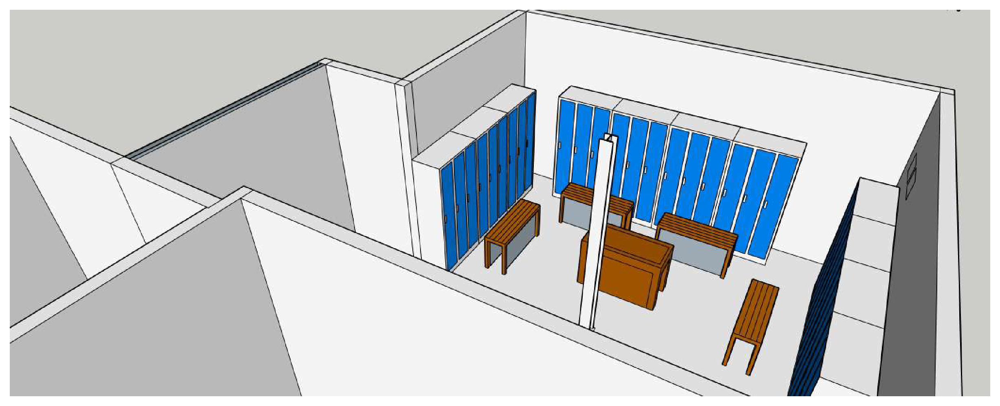
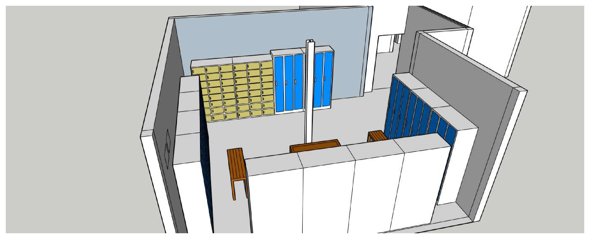
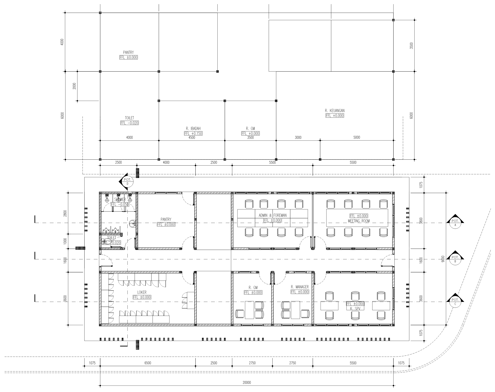
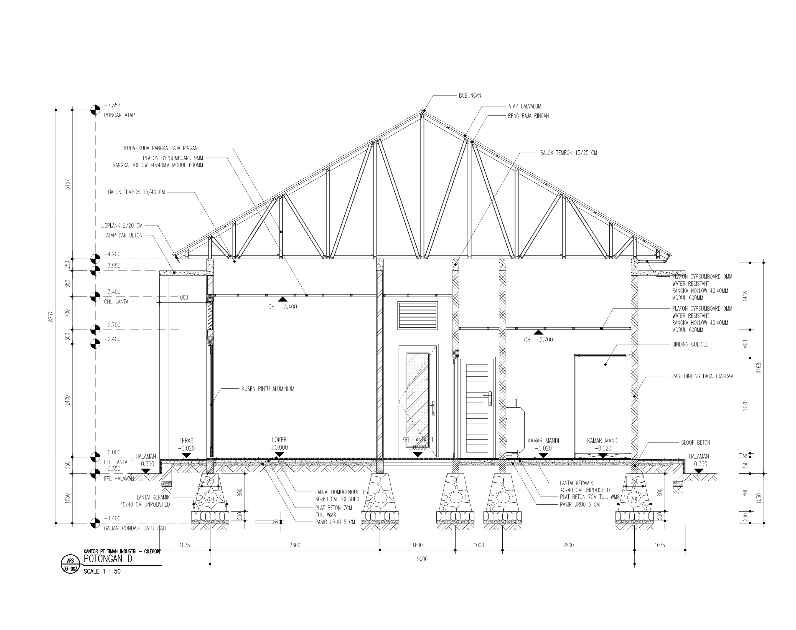

PT Timah Industri · Facility Engineering / CAD Design
Industrial Building & Facility Design
Building renovation, facility layout and technical drafting during my PT Timah Industri internship: a control-panel room expansion, wastewater sump pit, office-wing revisions and operator locker-room improvements.
Project Overview
Role & Scope
Facility design and drawing revisions in an industrial maintenance environment.
- Organization
- PT Timah Industri
- Role
- Maintenance & Instrumentation Intern
- Period
- Sep 2024 – Jul 2025
- Focus
- Facility design · Building modification · CAD drafting
Selected Works
Control Panel Room ExpansionDesignedDesigned and drafted an expansion concept for an industrial control-panel room.
Designed and drafted an expansion concept for an industrial control-panel room, developing plans, elevations and sections to coordinate the room arrangement, enclosure materials and supporting steel elements.
Drawing details include H-beam 150 mm, UNP 100 mm, 50 mm EPS sandwich panels, 5 mm clear glass, aluminium window frames and vinyl flooring.


Wastewater Sump PitDesignedDesigned a reinforced-concrete sump pit for plant wastewater collection.
Designed and drafted a reinforced-concrete sump pit for plant wastewater collection, including plan, section and construction details.
The drawings show a 2 × 3 m pit, 2 m depth, membrane waterproofing, a 150 mm concrete slab, two layers of M10 wiremesh and 15/20 ground-beam detailing with 2D22 reinforcement.



Locker Room RenovationRevisedRevised the operator locker-room layout and supporting 3D arrangement.
Revised the existing operator locker-room layout and supporting drawings, updating the arrangement of lockers, PPE storage, toilets, the IT room and circulation routes.
Deliverables: revised dimensioned layout and supporting 3D views.



Main Building Wing RevisionRevisedRevised office-building drawings as part of facility modification work.
Revised existing office-wing drawings, updating plan, elevation and sectional information as part of the facility modification work.
Deliverables: building-plan and sectional drawing revisions.


Skills & Tools
- Facility Design
- Building Layout
- Technical Drawing
- CAD Drafting
- Renovation Planning
- AutoCAD
- Revit